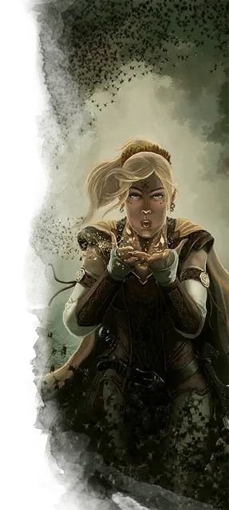

Нашествие насекомых
Insect Plague
5 уровень, Вызов

Время сотворения 1 действие
Дистанция 300 футов
Компоненты В, С, М (несколько крупинок сахара, немного зёрнышек и капля жира)
Длительность Концентрация, вплоть до 10 минут
Классы Друид, Жрец, Чародей
Подклассы круг земли (друид), домен бури (жрец), домен природы (жрец), хранитель роя (следопыт)
Рой кусачей саранчи заполняет сферу с радиусом 20 футов с центром на точке, выбранной вами в пределах дистанции. Сфера огибает углы. Сфера существует, пока активно заклинание, и её местность слабо заслонена. Пространство сферы является труднопроходимой местностью. Когда сфера появляется, все находящиеся в ней существа должны совершить спасбросок Телосложения. Существо получает колющий урон 4к10 при провале, или половину урона при успехе. Существа должны также совершать этот спасбросок когда впервые за ход входят в область заклинания или оканчивают там ход.
На больших уровнях. Если вы накладываете это заклинание, используя ячейку 6-го уровня или выше, урон увеличивается на 1к10 за каждый уровень ячейки выше пятого.